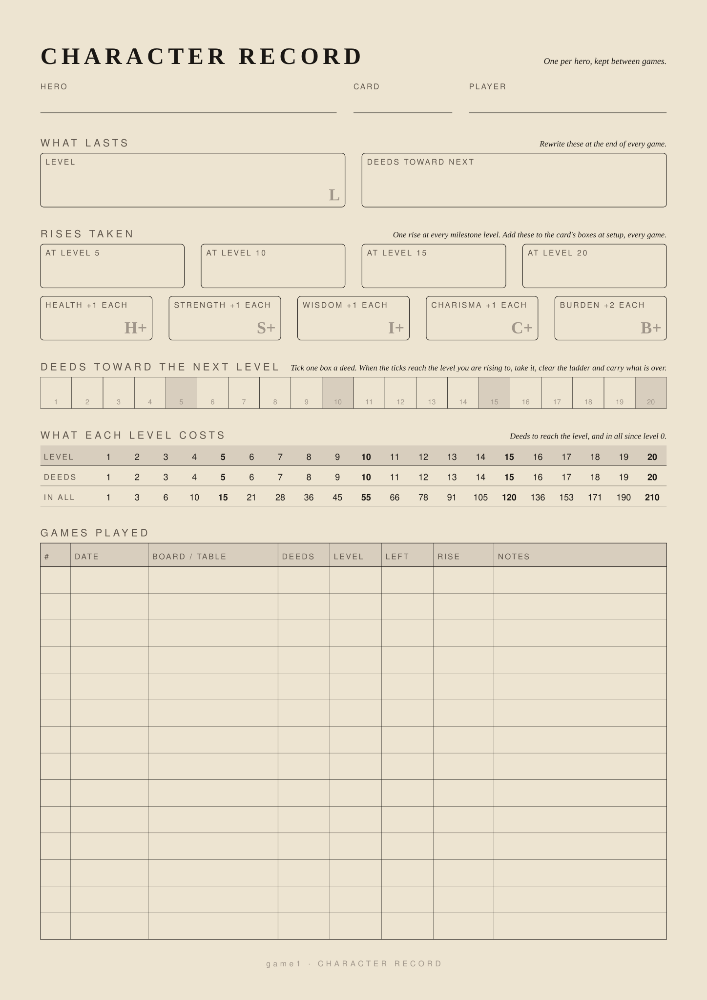

Character Record
One per hero, kept between games. The numbers a hero carries from one game to the next, and a line for every game they have played. Print it A4 portrait at 100%, one per hero, and fill it in pencil.
Open the sheet to print it.

